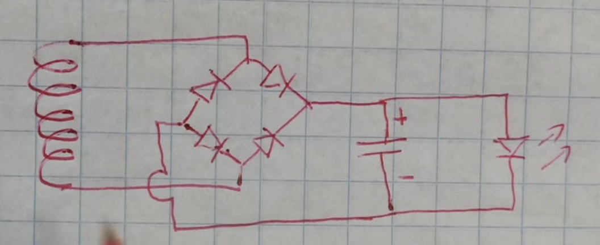

Lámpara de Faraday
Un prototipo que transforma el movimiento de dos imanes de neodimio en energía eléctrica, la almacena por un corto tiempo y la utiliza para encender un LED rojo.
La energía empieza en el movimiento
Cuando agitamos la lámpara, los imanes se desplazan respecto a la bobina. Ese movimiento hace variar el campo magnético que atraviesa sus espiras y aparece una tensión eléctrica en los extremos del alambre.
Después, los diodos ordenan la polaridad, el condensador almacena parte de la energía y el LED la convierte en luz.
Componentes utilizados
Los elementos que realmente se usaron en el prototipo.
2 imanes de neodimio
Crean un campo magnético intenso. Al moverse respecto a la bobina, hacen cambiar el flujo magnético.
Bobina de 1000 vueltas
Está hecha con cobre esmaltado calibre 30. En sus terminales aparece el voltaje inducido.
4 diodos rectificadores
Forman un puente rectificador y hacen que el condensador reciba la polaridad correcta.
Condensador de 4700 µF
Acumula temporalmente parte de los pequeños pulsos de energía producidos al mover los imanes.
LED rojo de 1,8 V
Necesita una tensión relativamente baja, por eso resulta adecuado para este montaje manual.
¿Qué pasa cuando agitamos la lámpara?
Los imanes se desplazan
Los dos imanes pasan por la zona interior de la bobina. Si se quedan quietos, el efecto prácticamente desaparece.
Cambia el flujo magnético
El campo que atraviesa las espiras aumenta y disminuye cuando los imanes se acercan, cruzan y se alejan.
La bobina genera voltaje
Ese cambio produce una fuerza electromotriz. Además, la polaridad cambia según el sentido del movimiento.
Los cuatro diodos rectifican
Dos conducen en un sentido y los otros dos cuando la polaridad se invierte. Así el condensador siempre recibe una polaridad útil.
El condensador almacena
Los pulsos se van acumulando temporalmente y la alimentación del LED se vuelve menos intermitente.
El LED emite luz
Cuando existe suficiente tensión, el LED rojo conduce y convierte parte de la energía eléctrica en energía luminosa.
Ley de Faraday
La ecuación que resume el principio de funcionamiento es:
En palabras simples: cuantas más vueltas tenga la bobina y más rápido cambie el flujo magnético, mayor puede ser el voltaje inducido.
¿Por qué cuatro diodos?
La bobina no entrega siempre el mismo positivo y negativo. Cuando cambia el sentido del movimiento, también cambia la polaridad.
El puente corrige ese problema
En una dirección conducen dos diodos y, cuando la polaridad se invierte, conducen los otros dos. La salida hacia el condensador conserva el mismo sentido eléctrico.
¿Qué hace el condensador?
Funciona como un pequeño depósito eléctrico. Cada pasada del imán produce un pulso y el condensador acumula temporalmente parte de esa energía.
Para C = 4700 µF = 0,0047 F y V = 1,8 V:
Esta animación es visual: representa cómo varios pulsos pequeños se van acumulando.
¿Por qué un LED rojo de 1,8 V?
El LED rojo requiere una tensión relativamente baja para comenzar a conducir, algo favorable cuando la energía proviene de una bobina accionada manualmente.
Cuando dispone de suficiente tensión, transforma parte de la energía eléctrica en luz.
Esquema utilizado en el prototipo
El dibujo muestra la bobina conectada al puente de cuatro diodos, seguido por el condensador y el LED.

Resumen en seis ideas
La mano aporta energía mecánica.
Los imanes cambian el flujo magnético.
Las 1000 vueltas generan una tensión inducida.
Los cuatro diodos rectifican la polaridad.
El condensador almacena energía temporalmente.
El LED rojo transforma energía eléctrica en luz.
La lámpara demuestra que un cambio de flujo magnético puede producir energía eléctrica aprovechable sin utilizar una batería como fuente principal.